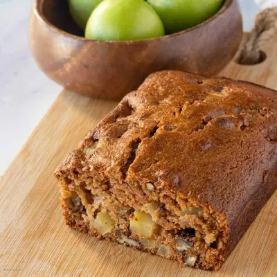

Vegan Apple Bread

Ingredients
- 1 1/2 cups all-purpose flour
- 1 tsp baking soda
- 1/2 tsp baking powder
- 1 tsp ground cinnamon
- 1/4 tsp ground nutmeg
- 1/4 tsp kosher salt
- 1/2 cup coconut sugar
- 1/4 cup maple syrup
- 1/3 cup avocado oil (or other neutral oil)
- 1/4 cup unsweetened non-dairy milk
- 1 tsp vanilla extract
- 3/4 cup unsweetened applesauce
- 1 cup apples (peeled, cored, and finely chopped)
- 1/4 cup chopped nuts (pecans or almonds)
Steps
- Preheat the oven to 350°F (175°C). Grease or line a 9x5-inch loaf pan with parchment paper.
- In a large bowl, whisk together the flour, baking soda, baking powder, cinnamon, nutmeg, and salt.
- In another bowl, whisk together the coconut sugar, maple syrup, oil, vanilla extract, applesauce, and non-dairy milk.
- Pour the wet mixture into the dry ingredients and stir until just combined. Do not overmix. Gently fold in the chopped apples and nuts (if using).
- Pour the batter into the prepared loaf pan and smooth the top.
- Bake for 50-60 minutes or until a toothpick inserted into the center comes out clean.
- Let the apple bread cool in the pan for about 10 minutes, then transfer to a wire rack to cool completely before slicing.
Recipe by Anjali Shah · The Picky Eater, from The Picky Eater. Saved here for personal use; the original has the full notes, tips and photos. Open original